| Characteristic | Republican | Independent | Democrat |
|---|---|---|---|
| N | 5,517 | 4,527 | 8,189 |
| Mean age (years) | 50.0 | 46.4 | 46.3 |
| Male (%) | 51.5 | 50.1 | 46.3 |
| White (%) | 89.6 | 78.4 | 69.7 |
| College graduate (%) | -68.0 | -70.6 | -62.9 |
| Metropolitan (%) | 82.5 | 85.4 | 87.8 |
| Employed (%) | 58.6 | 55.1 | 59.8 |
| Household size | 2.91 | 2.88 | 2.87 |
Partisan Differences in Health Behaviors During the COVID-19 Pandemic
Abstract
This study examines partisan differences in health behaviors during the COVID-19 pandemic using data from the Berkeley Interpersonal Contact Study (BICS). We analyze how political affiliation shaped individual responses to the pandemic, including social contact patterns, mask-wearing behavior, and vaccination uptake. Our findings reveal substantial and persistent partisan gaps in protective health behaviors that varied across geographic contexts and evolved over the course of the pandemic. These results have important implications for understanding how political polarization influences public health outcomes and for designing effective health communication strategies.
Keywords
COVID-19, political polarization, health behaviors, partisanship, public health
1 Introduction
The COVID-19 pandemic revealed a striking and troubling pattern in American public health: mortality rates diverged sharply along partisan lines. Counties that voted heavily for Donald Trump in 2020 experienced substantially higher COVID-19 death rates than those that supported Joe Biden [CITE: Gollwitzer, Krieger, etc.]. By some estimates, the gap in excess mortality between the most Republican and most Democratic counties exceeded X deaths per 100,000 population [CITE]. This partisan mortality divide was not a statistical artifact or a reflection of pre-existing health disparities alone—it emerged during the pandemic and widened over time, particularly after vaccines became available [CITE]. The question is: why? These aggregate patterns raise the possibility that individual partisans differed in their behavioral responses to the pandemic—that Republicans were less likely to reduce contacts, wear masks, and get vaccinated than Democrats. But county-level data alone cannot tell us whether such individual-level differences exist, how large they are, or whether they would persist if we accounted for the many other ways that Republican-leaning and Democratic-leaning places differ.
Two broad explanations have been offered for these partisan disparities. The first emphasizes policy environments: Democrats were concentrated in urban areas governed by Democratic officials who implemented stricter lockdowns, mask mandates, and business closures, while Republicans lived in areas with fewer restrictions. On this account, mortality differences reflect differential exposure to the virus driven by policy, not genuine differences in individual behavior. The second explanation emphasizes behavior: partisans may have genuinely differed in how they responded to the pandemic—in their willingness to reduce social contacts, wear masks, and get vaccinated—independent of the policies governing their communities. Adjudicating between these explanations is critical for understanding the role of political identity in shaping health outcomes and for designing effective public health responses to future crises.
There is strong theoretical reason to expect that partisan identity could shape health behavior directly. Over the past several decades, party identification in the United States has evolved from a summary of policy preferences into a fundamental social identity [CITE: Mason, Iyengar]. Partisanship now rivals race, religion, and ethnicity in its psychological salience and its capacity to structure social life [CITE]. Americans increasingly select friends, neighbors, and romantic partners based on party affiliation; they express greater social distance from and animosity toward members of the opposing party; and they view political events through the lens of partisan group membership rather than ideological principle [CITE: affective polarization literature]. This transformation of partisanship from preference to identity has profound implications for behavior. Social identities do not merely correlate with behavior—they drive it, through mechanisms including in-group conformity, social pressure, and responsiveness to elite cues from group leaders [CITE].
These dynamics of partisan identity found fertile ground in the domain of science and public health. Trust in scientific institutions had already been diverging along party lines for over a decade before COVID-19, with some scholars tracing the origins of this divide to the late 2000s [CITE]. But the pandemic dramatically accelerated this trend [CITE]. Questions that epidemiologists viewed as empirical—How severe is the virus? Do masks reduce transmission? Are vaccines safe and effective?— became markers of partisan allegiance [CITE]. Republican political leaders and conservative media figures frequently downplayed the severity of the pandemic, questioned the efficacy of masks, and expressed skepticism about vaccines, while Democratic leaders emphasized the threat and urged compliance with public health guidance [CITE]. If partisanship functions as a social identity, and if health behaviors became symbols of that identity, we should expect partisans to have diverged in their behavioral responses to the pandemic—not merely because they lived in different policy environments, but because their social identities motivated different responses to the same threat.
Prior research has documented substantial partisan differences in pandemic-related attitudes and some behaviors [CITE: Gadarian, Allcott, etc.]. However, this literature leaves critical questions unanswered. Most studies cannot distinguish whether observed partisan differences reflect genuine behavioral divergence or simply the correlation between partisanship and the policy environments, geographic contexts, and demographic compositions of the places where partisans live. Moreover, we know little about the conditions under which partisan gaps in health behavior are largest or smallest. Before we can explain why partisan identity shapes health behavior, we must first establish whether it does so robustly—independent of policy, place, and demography—and under what conditions partisan identity matters most.
This paper uses data from the Berkeley Interpersonal Contact Study (BICS), a nationally representative survey that collected detailed information on social contact patterns, mask-wearing, and vaccination during the COVID-19 pandemic, to address these gaps. A key strength of the BICS data is that respondents reported the actual number of interpersonal contacts they had on the day prior to the survey, rather than responding to abstract categorical questions about social behavior. Contact patterns are a primary driver of infectious disease transmission [CITE: contact tracing literature, Mossong et al.], and having concrete counts—rather than ordinal self-assessments—provides a more direct and granular measure of the behaviors most relevant to disease spread. Respondents also reported whether they wore masks during each contact, providing a second behavioral measure with direct relevance to transmission risk [CITE]. Crucially, the survey also captured respondents’ stated perceptions of pandemic severity; this allows us to examine whether attitudes and behaviors move together or diverge, a key test of whether expressed concern reflects genuine risk assessment or partisan signaling. The structure of these data makes the findings from this study relevant not only to researchers studying polarization and health behaviors, but also to those developing disease transmission models—which require precisely this type of contact and protective behavior data as inputs [CITE]. Moreover, understanding heterogeneity in contact patterns across subpopulations is critical for accurate disease modeling; research has shown that population-level averages can obscure important variation, and that heterogeneity in behavior can substantially shift disease dynamics even when overall means remain unchanged [CITE: heterogeneity in disease modeling literature]. Our approach is to examine whether partisan differences in health behavior persist across a range of contextual conditions, using patterns of variation to adjudicate between competing theoretical explanations. Although we cannot directly test causal mechanisms, we can ask: which theories survive contact with the empirical patterns?
Several theoretical perspectives generate distinct predictions about how partisan gaps should vary across contexts. If partisan differences are primarily artifacts of policy environments, gaps should disappear when we compare partisans living under similar policies—within strict mandate areas, within lenient areas, and within areas with no mandates. If partisan differences reflect demographic composition, controlling for age, education, urbanicity, and other covariates should eliminate the gaps. If local social conformity shapes behavior, we should observe individuals shifting toward the norms of their local community regardless of their own partisan identity—Democrats in Republican areas behaving more like Republicans, and vice versa. If cross-cutting social contexts reduce polarization, partisan gaps should be smaller when partisans live among members of the opposing party than when they live among co-partisans.
A key question is whether local context fully determines behavior or whether partisan identity exerts an independent effect. If context dominates, partisans in the same environment should behave similarly—a Democrat in a Republican-majority area should be nearly indistinguishable from their Republican neighbors. If partisan identity dominates, gaps should persist even within shared contexts: Democrats and Republicans living in the same types of areas should still behave differently from one another, even if both groups shift their behavior in response to local conditions. The persistence of partisan gaps across multiple contextual dimensions—partisan composition, urbanicity, region, and policy environment—would provide strong evidence that partisan identity drives health behavior independent of local culture. It would also suggest that behavioral polarization is “portable”: people carry their partisan patterns with them regardless of where they live, implying that geographic mixing alone will not reduce polarization.
An alternative explanation emphasizes information rather than identity. Republicans and Democrats may have been exposed to different information about the pandemic through divergent media ecosystems and elite messaging [CITE]. If so, partisan differences in behavior could simply reflect partisan differences in perceived severity: Republicans behaved less cautiously because they genuinely believed the pandemic was less dangerous, based on the information they received. This explanation generates specific predictions. First, we should observe partisan differences in perceptions of pandemic severity—which prior research confirms [CITE]. Second, and critically, perceptions should strongly predict behavior: those who perceived the pandemic as more severe should have behaved more cautiously. If information and perceptions fully mediate the relationship between partisanship and behavior, controlling for perceptions should substantially reduce partisan gaps. However, if partisan identity shapes behavior through channels beyond information processing—through social conformity, symbolic expression of group membership, or resistance to outgroup norms—behavioral gaps may persist even among partisans with similar perceptions. A third possibility is that stated perceptions are themselves expressions of partisan identity: partisans may report what their group is “supposed” to believe about pandemic severity, even if their actual behavior reveals different risk assessments. If Republicans report low concern but behave more cautiously than their stated perceptions would predict, this would suggest that expressed perceptions are partly performative—reflecting what one says as a group member rather than genuine beliefs that drive behavior. We examine whether perceptions and behaviors move together, and whether behavioral gaps remain after accounting for perceived severity.
Finally, we examine whether the severity of the pandemic moderates partisan polarization. If polarization thrives when threats are abstract but narrows when consequences become concrete and personal, partisan gaps should be smaller during periods of high mortality and incidence, when the pandemic’s toll was most visible and immediate. Conversely, gaps may widen during periods of lower severity, when there was more room for motivated reasoning and partisan interpretation of ambiguous risk information. Such a pattern would suggest that reality can partially override partisan identity when stakes are high enough—but that polarization may return when the immediate threat recedes.
We address two primary research questions. First, are partisan differences in health behaviors—social contacts, mask-wearing, and vaccine acceptance—robust to policy environment, geographic context, and demographic composition? Second, under what conditions are partisan gaps in health behavior largest versus smallest? We examine variation across local partisan context, pandemic severity, and geographic and policy environments to identify the factors that amplify or attenuate partisan polarization in health behavior.
Our findings reveal that partisan differences in health behaviors are remarkably robust. Gaps persist within policy environments, across regions, in both urban and rural areas, and regardless of local partisan composition. At the same time, the magnitude of polarization varies in ways that speak to the underlying mechanisms. We discuss the implications of these findings for understanding how social identity shapes health behavior and for designing public health communication strategies that can bridge partisan divides.
2 Data and Methods
Data Source
We use data from the Berkeley Interpersonal Contact Study (BICS), a nationally representative survey that collected detailed information on social contact patterns, protective behaviors, and demographic characteristics during the COVID-19 pandemic in the United States. BICS recruited respondents from an online panel and used weighting methods to generate nationally representative estimates. Respondents were asked how many people they had face-to-face contact with on the day before the survey interview, and detailed information was collected on up to three of these contacts, including information about each contact’s age, sex, race/ethnicity, mask usage, and physical distance. Additional details on the survey methodology, questionnaire design, sampling, and weighting are described in Feehan & Mahmud (2021).
Sample Characteristics
We analyze data from BICS waves 1 through 6, spanning April 2020 to May 2021. Wave 0 is omitted because it did not record political affiliation in a comparable way. Political party identification was assessed by the panel provider prior to the survey. Upon enrollment in the panel, all potential survey respondents were asked to select their partisan affiliation from standard categories (Democrat, Republican, Independent, or Prefer not to Say/Other). We exclude respondents in the “Prefer not to Say/Other” category to prevent potential misclassification bias.
The three partisan groups differed on several demographic characteristics (Table 1). Republicans were older on average and more likely to be male. The most striking demographic difference was in racial composition: 85% of Republicans identified as white, compared to 71% of Independents and 60% of Democrats. Democrats were more likely to live in metropolitan areas and to hold a college degree. These demographic differences are important to consider when interpreting partisan gaps in health behaviors, as some behavioral differences may be partially attributable to compositional differences between groups.
As visible in the sample sizes, our analytic sample of 18,233 respondents overrepresents Democrats (44.9%) relative to national estimates of party identification during the study period—30% Democrat, 29% Republican, and 39% Independent (Gallup, 2021)—while underrepresenting Independents (24.8% vs. 39%). Republicans are represented at roughly their national share (30.3% vs. 29%). Survey weights are applied throughout our analyses to improve representativeness. These weights adjust for age, gender, race/ethnicity, and education, and we additionally rake on party identification to match national targets. However, because partisanship is highly correlated with these demographic characteristics, the party-adjusted weights produce estimates that are nearly identical to the original demographic weights for within-party comparisons (see Section 7.6).
Measures
2.0.1 Health Behaviors
Social Contacts.
Mask-Wearing.
Vaccination.
2.0.2 Political Affiliation
We measure political affiliation using respondents’ self-reported party identification. Respondents were classified as Democrats, Republicans, or Independents based on their responses.
2.0.3 Geographic Context
We link individual survey responses to geographic data at the ZIP code and congressional district levels. This allows us to characterize the local partisan environment and policy context in which respondents were living.
Partisan Composition.
Policy Environment.
2.0.4 Control Variables
We control for a range of demographic and socioeconomic characteristics that may confound the relationship between partisanship and health behaviors, including age, gender, race/ethnicity, education, income, and urban/rural residence.
Analytic Approach
2.0.5 Descriptive Analysis
We first present descriptive statistics on partisan differences in health behaviors across survey waves. We use survey weights to generate nationally representative estimates.
2.0.6 Regression Models
We estimate regression models to assess partisan differences in health behaviors while controlling for potential confounders. For continuous outcomes (e.g., number of contacts), we use linear regression. For binary outcomes (e.g., mask-wearing), we use logistic regression.
To examine whether partisans differentially responded to changes in COVID-19 severity over time, we estimate models interacting political party with incidence rates:
\[ Y_{ict} = \beta_1 \text{Party}_i + \beta_2 \log(\text{Incidence}_{c,t-1}) + \beta_3 (\text{Party}_i \times \log(\text{Incidence}_{c,t-1})) + \gamma_c + \mathbf{X}_i'\delta + \epsilon_{ict} \]
where \(Y_{ict}\) is the outcome (daily contacts or mask usage) for individual \(i\) in county \(c\) at time \(t\), \(\text{Party}_i\) indicates partisan affiliation (with Democrats as the reference category), \(\log(\text{Incidence}_{c,t-1})\) is the log-transformed COVID-19 incidence rate in county \(c\) during the week prior to the survey, \(\gamma_c\) represents county fixed effects, and \(\mathbf{X}_i\) includes individual-level controls (interview day, urban/rural residence). We use lagged incidence (and mortality) rates to ensure proper temporal ordering: respondents observe pandemic conditions in their county, and then adjust their behavior in the following week. The coefficient \(\beta_3\) captures differential partisan responsiveness to these observed conditions.
To facilitate comparison between incidence and mortality effects, we standardize both predictors (z-score) before estimation. Coefficients thus represent the change in behavior associated with a one standard deviation increase in log incidence or log mortality.
The county fixed effects are central to our identification strategy. By including county fixed effects, the model uses only within-county variation over time, answering the question: “within the same county, as incidence rises and falls, how do partisans adjust their behavior?” This approach controls for all time-invariant county characteristics—local political culture, healthcare infrastructure, population density, and baseline behavioral norms—that might otherwise confound the relationship between incidence and behavior.
We intentionally omit wave fixed effects from these models. Including wave fixed effects would absorb the temporal variation in incidence rates that we aim to study. Following standard practice for modeling rates that span orders of magnitude, we log-transform incidence rates before analysis. Effect sizes are reported for a 10% increase in the log rate.
2.0.7 Geographic Heterogeneity
We examine whether partisan differences vary across geographic contexts by estimating models with interactions between individual partisanship and local partisan composition.
2.0.8 Temporal Dynamics
We assess how partisan differences evolved over time by estimating models separately for each survey wave and by examining interactions between partisanship and survey timing.
3 Results
We structure our results around the competing theoretical explanations outlined in the introduction. We first establish that partisan differences in health behaviors exist and are substantial. We then assess whether pandemic severity moderates polarization, testing whether objective risk information can override partisan behavioral patterns. Finally, we examine whether these differences can be explained by demographic composition, policy environments, or geographic context—or whether partisan differences in behavior persist even when you would expect them to dissapate.
3.1 Establishing Partisan Differences in Health Behaviors
We find substantial partisan differences across all three health behaviors examined: social contacts, mask-wearing, and vaccination. These differences were consistent across survey waves and persisted even after controlling for demographic characteristics including age, gender, race, education, and urban/rural residence. Republicans reported the highest levels of social contact, the lowest rates of mask usage, and the lowest vaccine acceptance rates, while Democrats exhibited the opposite pattern. Independents generally fell between the two partisan groups, though often closer to Republicans on contact behavior and closer to Democrats on vaccine acceptance. Figure 1 provides a visual summary of these differences.

Republicans reported significantly more daily interpersonal contacts than Democrats throughout the study period. On average, Republicans reported 6.6 total daily contacts compared to 5.3 for Democrats, a difference of approximately 1.2 contacts per day. This gap was even more pronounced for non-household contacts, with Republicans averaging 4.7 non-household contacts compared to 3.5 for Democrats. Independents fell between the two groups, reporting an average of 5.7 total daily contacts and 3.9 non-household contacts. These differences in contact patterns have important implications for disease transmission, as higher contact rates increase opportunities for viral spread within social networks.
Partisan differences in mask-wearing were substantial and represented one of the largest behavioral gaps observed in the study. Democrats reported wearing masks during 65.6% of their interpersonal contacts, compared to just 54.8% for Republicans—a gap of nearly 11 percentage points. Independents reported mask usage rates (53.8%) similar to Republicans. This partisan gap in mask-wearing was larger than differences observed across other demographic categories including race, gender, and education, highlighting the outsized role of political affiliation in shaping protective behavior during the pandemic.
Vaccine acceptance, measured during the final survey wave in May 2021, showed pronounced partisan differences. We measure vaccine acceptance as either being vaccinated or intending to get vaccinated, which captures underlying attitudes toward vaccination independent of differential access to vaccines across geographic areas during the early rollout period. Among Democrats, 41.1% accepted vaccines (were vaccinated or intended to be), compared to 34.5% of Independents and 34.8% of Republicans—a 6 percentage point gap between Democrats and Republicans.
Underlying these behavioral differences were substantial partisan gaps in pandemic risk perception (Figure 8 in Section 7.1). In our sample, 62.6% of Democrats reported being “very concerned” about COVID-19 compared to 39.1% of Republicans—a 23 percentage point gap. These perception differences have been widely documented (Gadarian et al., 2021; Kaushal et al., 2022; Milosh et al., 2021) and likely contribute to the behavioral patterns observed here.
These baseline findings establish that partisan gaps in health behaviors are substantial and consistent across all three outcomes. The critical question is whether these differences reflect genuine partisan divergence or can be explained by other factors. We turn next to examining whether perceptions of pandemic severity can account for these behavioral differences, and then whether objective pandemic conditions moderated polarization.
3.2 Do Perceptions Explain Partisan Behavioral Differences?
One explanation for partisan differences in health behavior is that they simply reflect differences in risk perception: Republicans may have behaved less cautiously because they genuinely believed the pandemic was less severe. If this explanation holds, we should observe a tight link between stated concern and protective behavior.
Partisan gaps in concern were indeed substantial. As noted above, 62.6% of Democrats reported being “very concerned” about COVID-19 compared to just 39.1% of Republicans. Yet the relationship between perceptions and behavior was more complex than a simple information-processing account would predict.
We test this directly by comparing behaviors among respondents who reported the same level of concern. If perception differences fully account for behavioral differences, then Republicans and Democrats who express the same level of concern should behave similarly. Figure 2 shows the Republican-Democrat gap in contacts and mask usage within each level of stated concern (see Figure 13 for levels by party).
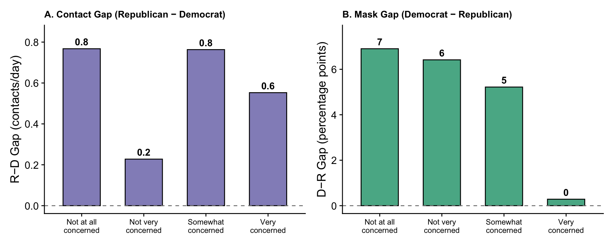
The relationship between concern and partisan gaps differs across behaviors. For social contacts, the Republican-Democrat gap persists at every level of concern: Republicans report more contacts than Democrats whether they are “not at all concerned” or “very concerned” about the pandemic. Among the very concerned, Republicans still reported 5.6 daily contacts compared to 5.0 for Democrats—a gap of 0.6 contacts. For mask usage, however, the pattern is different: the partisan gap narrows as concern increases, and among the “very concerned,” Republicans and Democrats report nearly identical mask usage (72% vs. 72%).
But this pooled analysis conceals a striking temporal pattern. Figure 3 tracks mask usage only among the “very concerned”—comparing Democrats and Republicans who expressed identical levels of stated concern across all six survey waves.
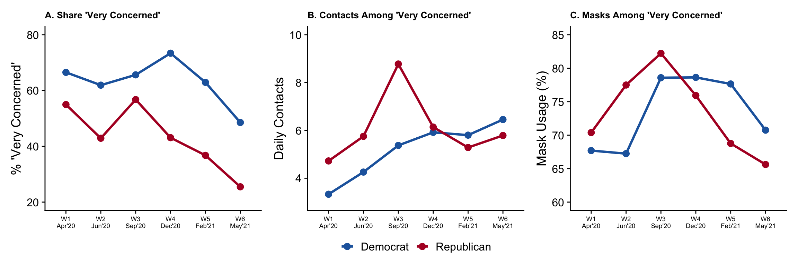
Panel A shows that the share reporting “very concerned” declined for both parties, but especially for Republicans (55% to 26% vs. 67% to 49% for Democrats). Panels B and C reveal how behavior among the very concerned evolved—and the patterns differ in revealing ways.
For contacts (Panel B), very concerned Republicans initially reported more contacts than very concerned Democrats (gap of +1.4 to +3.4 contacts in waves 1-3). But this gap collapsed during the winter 2020-21 surge (wave 4-5) and actually reversed by waves 5-6, with concerned Democrats reporting slightly more contacts. This timing aligns with the lifting of stay-in-place restrictions: among all respondents, the percentage reporting being under a stay-in-place order declined from approximately 95% in wave 1 to 70-81% by wave 5, with Republicans showing a larger decline than Democrats (Figure 16 in Section 7.2). The survey dropped this question entirely in wave 6 as most states had ended formal restrictions. The contact pattern suggests mortality-driven convergence early on, followed by Democrats increasing contacts as restrictions lifted—perhaps reflecting a strategic shift toward relying on masks and vaccines rather than contact reduction.
For masks (Panel C), a similar reversal occurred but with different timing: very concerned Republicans wore masks at higher rates than very concerned Democrats in waves 1-3, but by wave 4 Democrats wore masks more. Unlike contacts, this reversal did not correspond to the mortality surge or the lifting of restrictions—it persisted even as mortality declined in waves 5-6.
The contrast between these patterns is telling. The selection interpretation—that “very concerned” Republicans became an unusual subset over time—cannot easily explain why contacts and masks show different trajectories among this same group. If selection were the primary driver, both behaviors should move similarly. Instead, the contact gap tracks both mortality conditions (narrowing during surges) and policy context (Democrats increasing contacts as restrictions lifted), while the mask gap appears to reflect politicization (reversing and persisting regardless of conditions or restrictions). Concerned Republicans increased contacts and reduced masking as restrictions lifted, suggesting they were not substituting one protective behavior for another but rather abandoning mask-wearing as it became increasingly marked as a partisan signal. Concerned Democrats, by contrast, increased contacts while maintaining high mask usage—consistent with a strategic shift toward relying on masks and vaccines for protection as they resumed social activities.
This divergence is revealing. Mask behavior appears tied to stated concern in the pooled data—those who express worry mask more, regardless of party. Contact behavior, by contrast, shows persistent partisan gaps even among those who express identical levels of concern, suggesting that factors beyond risk perception shape social contact decisions. Of course, far fewer Republicans express high concern in the first place (39% vs. 63% of Democrats), so the “very concerned” Republicans may be a self-selected group who have broken from partisan norms on both perceptions and behavior.
A second test examines how perceptions and behaviors moved over time. If stated concern drives behavior, periods of heightened concern should correspond to more cautious behavior, and declines in concern should correspond to less caution. Instead, we observe a striking disconnect. The partisan gap in risk perception was actually smallest at the beginning of the study period: in April 2020, Republicans were nearly as likely as Democrats to report being “very concerned” about COVID-19. Notably, while case counts were low in April 2020, mortality rates were at their highest—the virus was more deadly before treatments improved (Figure 12 in Section 7.1.1). By June 2020, as case fatality rates declined and the pandemic became increasingly politicized, the perception gap had more than doubled, and it remained elevated throughout the study regardless of whether cases were rising or falling (Figure 10 in Section 7.1). During the winter 2020-21 mortality surge, Republicans substantially reduced their social contacts—the behavioral gap with Democrats narrowed to its lowest point in the study. Yet Republican concern did not rise during this period; if anything, it declined, reaching its lowest level in February 2021 (Figure 9 in Section 7.1). Republicans adjusted their behavior in response to concrete mortality conditions while simultaneously expressing less concern about the pandemic.
Together, these findings reveal a complex relationship between stated concern and behavior that varies across outcomes. For mask usage, higher concern is associated with reduced partisan gaps—among the very concerned, Republicans and Democrats behave nearly identically. For contact behavior, partisan gaps persist at all levels of concern, and behavior responds to objective mortality conditions in ways that stated concern does not track. One interpretation is that stated perceptions are shaped by the different information environments partisans inhabit—Republicans may simply report what they hear from their media ecosystems and political leaders. But this information-based account cannot fully explain the contact patterns: if Republicans genuinely believed the pandemic was less severe, we would expect their behavior to reflect those beliefs consistently. Instead, Republicans reduced contacts when local mortality rose, suggesting they did perceive the threat—even as their stated concern signaled otherwise. This points to a deeper possibility: that expressed concern functions partly as a marker of partisan identity rather than a straightforward reflection of risk beliefs, and that this dynamic operates more strongly for some behaviors (contacts) than others (masks).
Interaction models that formally test how concern and mortality moderate partisan gaps confirm these patterns (see Section 7.3 in the Appendix): concern significantly narrows the mask gap but not the contact gap. We next examine whether objective pandemic conditions—local mortality and incidence rates—moderated polarization differently.
3.3 Does Objective Pandemic Severity Moderate Polarization?
To understand how partisan polarization in health behaviors evolved over the pandemic, we examine when gaps between Republicans and Democrats were largest and smallest, and how these patterns related to prevailing mortality conditions. Figure 4 displays the Republican-Democrat gap in social contacts and mask usage across six survey waves, with each wave labeled by the average national COVID-19 mortality rate at that time.
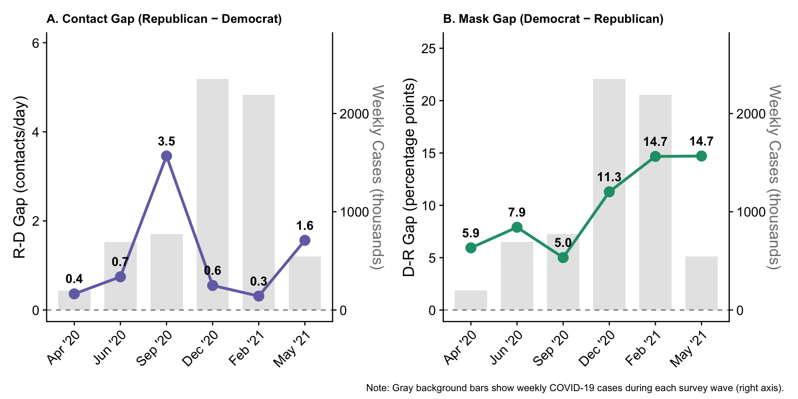
Partisan gaps in social contact behavior varied substantially across the pandemic, though the pattern is not straightforward. Early in the pandemic (April–June 2020), contact gaps were relatively small, likely reflecting a period when the novelty of the virus and considerable uncertainty about its severity led both parties to exercise caution. As the pandemic progressed and became increasingly politicized, the contact gap widened substantially, reaching its peak in Sep ’20 (3.5 contacts/day) when mortality was comparatively low at 1.4 deaths per 100,000. Notably, the gap narrowed again during the winter 2020–21 surge, with the smallest gap observed in Feb ’21 (0.3 contacts/day) when mortality reached 7.0 deaths per 100,000—the highest level in the study.
Strikingly, this behavioral convergence was not accompanied by convergence in risk perceptions. While Republicans reduced their contacts during the winter 2020-21 surge, they simultaneously reported lower levels of concern about COVID-19 (Figure 9 in Section 7.1). During February 2021, when the contact gap was at its narrowest, Republican concern dropped to its lowest point in the study. This disconnect—reducing contacts while reporting lower concern—suggests that stated perceptions may be partly performative, reflecting what group members are “supposed” to believe rather than the risk assessments that actually guide behavior.
Mask-wearing polarization showed a different pattern, with the partisan gap increasing over time. The Democrat-Republican mask gap grew from 5.0 percentage points in Sep ’20 to 14.7 percentage points by May ’21. Unlike contact behavior, mask-wearing differences did not narrow during high-mortality periods, suggesting that mask-wearing may have become a more entrenched marker of partisan identity over the course of the pandemic.
We next examine whether partisans adjusted their behavior in response to changing COVID-19 conditions. Using regression models with county fixed effects (see Section 2), we estimate how behavior changed in the week after observing local incidence and mortality rates. This within-county design asks: when cases or deaths rose in a given county, did residents of that county subsequently change their behavior? We find that mortality was the stronger predictor of contact behavior, with all partisan groups reducing contacts following increases in deaths (see Section 7.9 for detailed coefficients). In contrast, incidence was the stronger predictor of mask-wearing, with Democrats showing the largest response to rising case counts. Figure 5 displays the mortality response for contacts.
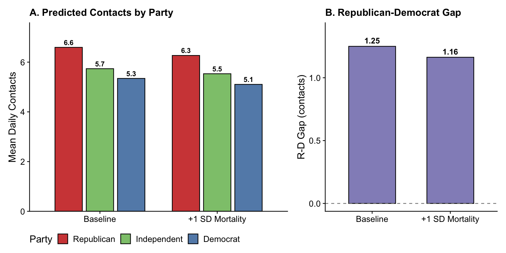
Figure 5 illustrates how contact behavior responds to mortality. Panel A shows that all partisan groups reduce their contacts when mortality rises: Republicans decrease from 6.6 to 6.3 contacts, Democrats from 5.3 to 5.1, and Independents from 5.7 to 5.5. Panel B shows that the Republican-Democrat gap narrows slightly, from 1.25 contacts at baseline to 1.16 at higher mortality. This convergence—though modest—suggests that changes in mortality conditions over time serve as a relatively apolitical threat signal that motivates similar behavioral adjustments regardless of partisan identity.
Incidence, by contrast, was not a significant predictor of contact behavior for any group (see Section 7.9 for detailed coefficients). However, incidence was the stronger predictor of mask-wearing for Democrats: a one standard deviation increase in log incidence was associated with increases of 3.4 percentage points among Democrats, 4.2 among Independents, and 2.6 among Republicans. Democrats showed the largest mask response to rising cases, and their response to incidence (3.4 pp) was more than double their response to mortality (1.5 pp; see Figure 27 for predicted mask usage by party). Incidence also predicted reported concern about COVID-19, with Democrats again showing the largest response (2.3 pp per SD increase) compared to Republicans (-0.3 pp; see Figure 28). Notably, while Republicans reduced contacts in response to rising mortality, their reported concern showed little change (0.8 pp)—consistent with the descriptive finding above that behavioral convergence during the winter surge was not accompanied by attitudinal convergence.
Despite evidence that partisans adjusted behaviors after observing changes in pandemic conditions, partisan gaps persisted throughout the study period. When mortality rose, all groups reduced contacts similarly, but the baseline gap between Republicans and Democrats remained. When incidence rose, all groups increased mask-wearing, but Democrats increased more, slightly widening the mask gap. This persistence suggests that while objective threat information influenced behavior, partisan differences in baseline behavior were not overcome by pandemic signals.
These findings provide partial support for the theory that objective risk can override partisan patterns. Partisans did respond to pandemic severity—particularly mortality—by reducing contacts, suggesting that concrete, immediate threats can influence behavior across party lines. However, the persistence of partisan gaps even during high-severity periods indicates that risk information modulates but does not eliminate the influence of partisan identity on health behavior. Polarization narrowed during surges but was not erased, and gaps reemerged as conditions improved—consistent with the idea that abstraction enables polarization, while concrete consequences temporarily constrain it. Interaction models that jointly test concern and mortality as moderators confirm this pattern: mortality significantly narrows the contact gap, while concern does not (Section 7.3).
3.4 Testing Alternative Explanations: Context, Policy, and Place
Health behaviors varied across U.S. census regions for all three partisan groups, but the regional patterns differed in ways that shaped the magnitude of partisan gaps (see Figure 35 in Section 7.10 for maps of behavior levels by party). To isolate regional differences from potential confounding by survey wave and local pandemic severity, we estimate adjusted means using regression models that control for wave and log mortality rates. Democrats showed the most geographic variation in contact behavior (range of 0.9 contacts across regions), followed by Independents (0.8), while Republicans showed the least variation (0.4). For mask usage, the pattern reversed: Independents showed the most variation across regions (19 pp), followed by Republicans (11 pp), with Democrats showing the most consistent behavior (8 pp).
Figure 6 displays the partisan gaps in contacts and mask usage by census region. The Republican-Democrat contact gap was largest in the West (1.7 contacts) and smallest in the South (0.9 contacts); the mask gap was similarly largest in the West (14.6 pp) and smallest in the South (8.3 pp). The South is a notable case: despite being the most politically conservative region, it exhibited the smallest partisan gaps in both behaviors. This pattern appears driven by Republicans in the South reporting fewer contacts (6.4) and higher mask usage (54%) than Republicans elsewhere, while Southern Democrats behaved similarly to Democrats in other regions—suggesting that regional culture or norms may moderate Republican behavior specifically. Conversely, gaps were largest in the Midwest and West, regions with greater political heterogeneity, where living among political out-group members may sharpen behavioral differentiation. See Section 7.10 for additional geographic breakdowns including vaccination, perception, and finer-grained division and state-level maps.
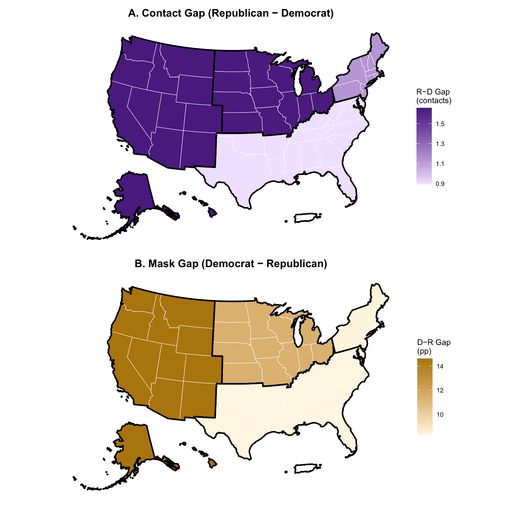
These regional differences in partisan gaps may be partly explained by urban-rural composition. Partisan gaps in contacts and mask-wearing were smaller in non-metropolitan areas (Figure 29 in Section 7.10.1), which helps explain why the South—with its higher proportion of non-metropolitan residents—showed smaller partisan gaps. A potential confounder is that metropolitan areas were more likely to have strict mask mandates; however, partisan gaps persisted within each policy environment (Figure 31 in Section 7.10.2), indicating that individual partisanship shapes behavior beyond policy effects.
3.4.1 Behavior in Opposing-Party Areas
Another potential explanation for geographic variation is that partisans may adapt their behavior to local social norms. To test this, we examine whether Democrats and Republicans behave differently depending on whether they live in a congressional district represented by their own party or the opposing party.
For social contacts, partisan gaps persisted across local contexts (Figure 32 in Section 7.10.3). Republicans reported more daily contacts than Democrats regardless of whether they lived in Democratic-led or Republican-led congressional districts. Democrats reported similar contact levels in both contexts (5.3 in Democratic districts vs. 5.5 in Republican districts), while Republicans in Democratic-led districts reported notably more contacts (6.8) than those in Republican-led districts (6.0).
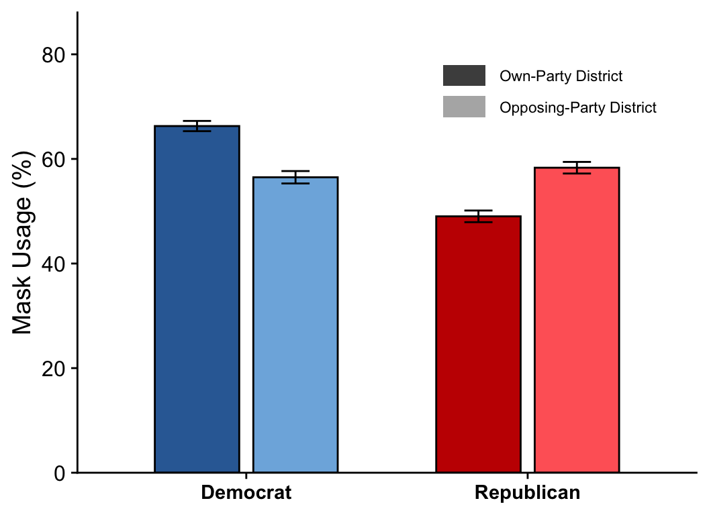
For mask-wearing, however, partisans living in opposing-party areas shifted their behavior toward local norms (Figure 7). Democrats in Republican-led districts reported 56% mask usage compared to 66% for Democrats in Democratic districts—a 10 percentage point shift toward Republican behavior. Conversely, Republicans in Democratic-led districts reported 58% mask usage compared to 49% in Republican districts—a 9 percentage point shift toward Democratic behavior. Pandemic risk perception followed a similar pattern: Republicans in Democratic-led districts were more likely to report being “very concerned” about COVID-19 (46%) than Republicans in Republican-led districts (37%)—a 9 percentage point shift. These patterns persist after controlling for local incidence rates, metropolitan status, and survey wave, suggesting that local partisan context shapes health behavior and risk perception beyond these observable confounders.
Importantly, because both Democrats and Republicans shifted their mask-wearing behavior in the same direction—toward local norms—the partisan gap in mask usage remained similar regardless of context: 8 percentage points in Democratic-led districts versus 7 percentage points in Republican-led districts (Figure 33 in Section 7.10.3). For contacts, however, the pattern differed: the Republican-Democrat gap was larger in Democratic-led districts (1.5 contacts) than in Republican-led districts (0.6 contacts), driven primarily by Republicans reporting substantially more contacts when living in Democratic areas. These findings suggest that while local partisan context can influence individual behavior, it does not eliminate—and in some cases may amplify—underlying partisan differences.
Geographic variation in vaccine acceptance is examined in Section 7.10. Together, these results indicate that partisan gaps in health behavior are robust across geographic contexts: they persist within regions, policy environments, and local partisan contexts, though their magnitude varies in ways that reflect the interplay between individual partisanship and local social environments.
4 Discussion
4.1 Summary of Findings
Our findings reveal that partisan differences in health behaviors during the COVID-19 pandemic were substantial, consistent, and remarkably robust to alternative explanations. Republicans reported more daily contacts, wore masks less frequently, and expressed lower vaccine acceptance than Democrats across all survey waves. These gaps persisted after controlling for demographics, within policy environments, across geographic regions, and regardless of local partisan context. The evidence strongly supports the view that partisan identity independently shaped health behavior during the pandemic—not merely through its correlation with policy, place, or demography, but as a direct influence on individual action.
Yet the patterns we observe are not uniform across behaviors, and these differences are theoretically revealing. Contact behavior and mask-wearing—two protective behaviors with direct relevance to disease transmission—showed strikingly different trajectories over the pandemic. Partisan gaps in social contacts narrowed during high-mortality periods, particularly during the winter 2020-21 surge, suggesting that concrete, visible threat can temporarily override partisan divergence. Mask-wearing, by contrast, showed increasing polarization over time, with the Democrat-Republican gap nearly tripling from 5 percentage points in September 2020 to 15 percentage points by May 2021. Unlike contacts, mask-wearing differences did not narrow when deaths surged.
We propose that this divergence reflects the different social functions these behaviors serve. Reducing social contacts is a relatively private decision with high personal costs—fewer contacts means fewer social interactions, less economic activity, and greater isolation. When mortality rose sharply, the costs of not reducing contacts became concrete and immediate: people were dying, and the threat was no longer abstract. Under these conditions, all partisan groups reduced their contacts, and the gap narrowed. Critically, this behavioral convergence occurred without attitudinal convergence—Republicans reduced contacts while simultaneously reporting lower concern about COVID-19. This disconnect suggests that when stakes are high enough, behavior responds to objective conditions even when expressed attitudes continue to signal partisan identity.
Our regression analyses provide further evidence for this interpretation. Mortality rates—the most concrete and locally observable indicator of pandemic severity—were the strongest predictor of contact behavior for all partisan groups. When deaths rose in a county, residents of that county subsequently reduced their contacts, regardless of party. Incidence rates, by contrast, had no significant effect on contacts. This pattern makes sense: case counts are abstract statistics, easily dismissed or reinterpreted, while deaths are concrete and visible—reported in local news, experienced through social networks, marked by obituaries and funerals. Mortality represents the kind of undeniable, proximate consequence that cuts through partisan framing. And notably, this mortality-driven convergence occurred for the behavior most directly relevant to contagion: interpersonal contact is the primary mechanism of respiratory virus transmission, making contact reduction the highest-stakes protective behavior in epidemiological terms. When the consequences were most concrete and the behavioral stakes were highest, partisan gaps narrowed.
But polarization did not dissipate—it shifted. During the winter 2020-21 surge, when contact gaps reached their narrowest point, mask-wearing gaps were simultaneously approaching their peak. The same period that saw behavioral convergence on contacts saw continued divergence on masks. This pattern suggests that partisan polarization in health behavior is not a fixed quantity that rises and falls uniformly, but rather a persistent force that finds expression where it can. When high mortality made contact reduction unavoidable, partisans may have compensated by doubling down on the symbolic terrain of mask-wearing—a domain where partisan differentiation carried fewer immediate consequences. We cannot definitively establish this compensatory dynamic, and alternative explanations deserve consideration. The divergent trajectories of contact and mask polarization may simply reflect different politicization timelines rather than a compensatory shift. Masks became a flashpoint of partisan conflict relatively late in our study period, and the increasing polarization we observe may reflect this escalating politicization rather than any displacement from contact behavior.
Moreover, the early pandemic saw public health authorities shift their guidance on masks in ways that may have undermined trust. In the initial months, officials advised the general public against wearing masks—guidance that many perceived as motivated more by the need to preserve limited supplies for healthcare workers than by scientific evidence about mask efficacy [CITE]. When guidance reversed and masks were subsequently promoted as essential, some members of the public may have viewed this reversal as evidence of untrustworthiness rather than evolving scientific understanding. Indeed, research shows that trust in public health institutions and science declined among both Democrats and Republicans over the course of the pandemic [CITE]. Yet this shared erosion of trust cannot fully account for the partisan divergence we observe: Republicans lost trust at substantially higher rates than Democrats [CITE]. Importantly, this differential erosion of trust did not emerge from the pandemic itself. Scholars have documented a growing partisan gap in trust toward scientific and public health institutions dating back to at least 2009 [CITE], and this divide was already evident in differential vaccine uptake during the H1N1 influenza outbreak [CITE]. The COVID-19 pandemic, then, did not create partisan differences in trust—it activated and amplified a fissure that had been widening for over a decade. This suggests that the guidance reversal on masks interacted with pre-existing partisan dispositions toward scientific and governmental institutions rather than producing them. The partisan element cannot be erased. We cannot fully adjudicate between these explanations with our data, but we note that they are not mutually exclusive: institutional trust failures may have created the conditions under which masks could become symbolic markers of partisan identity, with the polarized response reflecting deeper differences in how partisans relate to scientific authority.
Why, then, might masks have served as lower-stakes ground for partisan differentiation? Compared to contact reduction, wearing a mask is a low-cost action—it requires no fundamental change to one’s social or economic life. But masks are also visible. Unlike the private decision of whether to attend a gathering, mask-wearing occurs in public spaces where others can observe it. This visibility transforms masks from a purely protective behavior into a potential signal of group membership. Wearing a mask—or conspicuously not wearing one—communicates something to others about who you are and what you believe, but mostly which group you belong to.
The scientific uncertainty surrounding mask efficacy may have amplified this dynamic. While the epidemiological evidence for reducing contacts was relatively straightforward—fewer interactions mean fewer transmission opportunities—the evidence on mask effectiveness was more contested, with guidance changing over the course of the pandemic and ongoing debates about mask types, fit, and real-world effectiveness [CITE]. This ambiguity created space for motivated reasoning: partisans could selectively attend to evidence that supported their group’s position. When the science is clear and consequences are immediate, there is less room for partisan interpretation; when the science is contested and consequences are diffuse, identity can more easily shape both belief and behavior.
The result is that mask-wearing may have become what economists call a “cheap talk” signal—a low-cost way to demonstrate partisan allegiance. For Democrats, wearing a mask signaled adherence to public health guidance, trust in scientific institutions, and solidarity with a collective response to the pandemic. For Republicans, not wearing a mask could signal skepticism of government overreach, prioritization of personal freedom, and alignment with political leaders who downplayed the pandemic’s severity. As the pandemic wore on and masks became increasingly politicized, the symbolic stakes of mask-wearing may have risen even as its epidemiological stakes remained constant—explaining why polarization increased over time rather than fading as the novelty of the pandemic waned.
This interpretation aligns with our finding that stated perceptions of COVID-19 concern showed a similar pattern to mask-wearing: Republican concern decreased over time even as they reduced contacts during surges. Strikingly, the partisan gap in risk perception was smallest at the very beginning of our study period—in April 2020, Republicans were nearly as likely as Democrats to report being “very concerned” about COVID-19. By June 2020, that gap had more than doubled, and it remained elevated throughout the pandemic.
Critically, while case counts were relatively low in April 2020, mortality rates were at their highest—the virus was simply more deadly in the early months before treatments improved and clinical protocols developed. This pattern extends our core finding about concrete consequences reducing polarization: just as mortality drove behavioral convergence in contacts, high early-pandemic lethality may have produced the initial alignment in perceptions. As case fatality rates declined over subsequent months—even as the pandemic became increasingly politicized—the perception gap widened. The combination of declining lethality and escalating partisan conflict likely both contributed to this divergence.
Both expressed concern and mask-wearing are relatively costless ways to signal partisan identity—what one says about the pandemic and whether one wears a visible symbol of compliance. Contact behavior, by contrast, involves real trade-offs that are experienced privately. The divergence between private, high-stakes behaviors (contacts) and public, low-stakes behaviors (masks, stated concern) suggests that partisan identity most powerfully shapes actions that are visible to others and carry minimal personal cost—precisely the conditions under which signaling is most attractive.
4.2 Implications for Public Health
4.2.1 Health Communication
4.2.2 Policy Design
4.3 Relation to Prior Literature
4.4 Limitations
Several limitations should be considered when interpreting our findings.
First, …
Second, …
Third, …
5 Conclusion
6 References
Feehan, D. M., & Mahmud, A. S. (2021). Quantifying population contact patterns in the United States during the COVID-19 pandemic. Nature Communications, 12(1), 893. https://doi.org/10.1038/s41467-021-20990-2
Gadarian, S. K., Goodman, S. W., & Pepinsky, T. B. (2021). Partisanship, health behavior, and policy attitudes in the early stages of the COVID-19 pandemic. PLOS ONE, 16(4), e0249596. https://doi.org/10.1371/journal.pone.0249596
Gallup, G. (2021). Party ID Average for 2020 Winds Up Similar to Prior Years. In Gallup.com. https://news.gallup.com/poll/328310/party-average-2020-winds-similar-prior-years.aspx
Kaushal, N., Lu, Y., Shapiro, R. Y., & So, J. (2022). American Attitudes Toward COVID-19: More Trumpism Than Partisanship. American Politics Research, 50(1), 67–82. https://doi.org/10.1177/1532673X211046251
Milosh, M., Painter, M., Sonin, K., Van Dijcke, D., & Wright, A. L. (2021). Unmasking partisanship: Polarization undermines public response to collective risk. Journal of Public Economics, 204, 104538. https://doi.org/10.1016/j.jpubeco.2021.104538
7 Appendix
7.1 Pandemic Risk Perceptions Over Time
The main text documents substantial partisan differences in pandemic risk perception, with Democrats more likely than Republicans to report being “very concerned” about COVID-19. Figure 8 shows the overall distribution of concern by party, pooled across all waves. This section then examines how these perception gaps evolved over the course of the pandemic, paralleling our analysis of behavioral gaps over time.

Figure 9 displays the percentage of each partisan group reporting being “very concerned” about COVID-19 across survey waves. Figure 10 shows the Democrat-Republican gap in this measure over time, with weekly COVID-19 cases shown in the background for context.

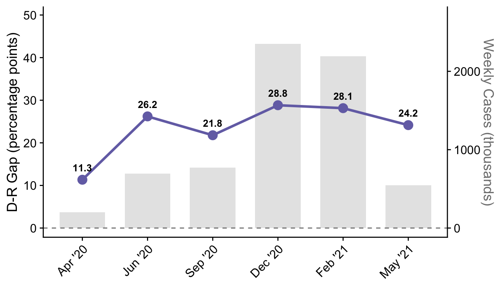
The perception gap was smallest at the beginning of the pandemic: just 11.3 percentage points in Apr ’20. By Dec ’20, the gap had grown to 28.8 percentage points. In April 2020, Republicans were nearly as likely as Democrats to report being “very concerned” about COVID-19; by June 2020, that gap had more than doubled, and it remained elevated throughout the remainder of the study period.
Critically, while incidence was relatively low in April 2020, mortality rates were at their highest—the virus was simply more deadly in the early months before treatments improved and clinical experience accumulated. This pattern is consistent with our broader finding that concrete, visible consequences reduce polarization. When the threat was most lethal, perceptions were least polarized. As case fatality rates declined over subsequent months—even as case counts rose—the perception gap widened. The combination of declining lethality and escalating politicization of the pandemic through debates over lockdowns, masks, and the credibility of public health guidance likely both contributed to this divergence.
All three partisan groups showed declining concern over time, particularly from the winter surge through spring 2021 as vaccines became widely available. However, this decline was steeper among Republicans and Independents than among Democrats, maintaining the perception gap even as overall concern fell.
7.1.1 Perceptions vs. Local Pandemic Conditions
The previous figures show perceptions against national case counts. But Republicans and Democrats live in different places and thus experienced different local pandemic conditions. Figure 11 shows each party’s stated concern alongside the average local incidence rate they actually experienced, given where respondents in each party lived. This allows us to assess whether perceptions tracked the objective conditions each group faced.
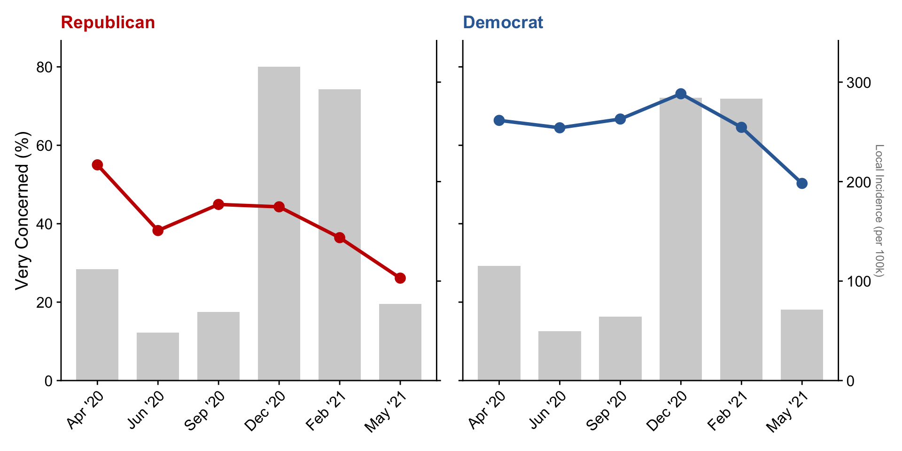
The figure reveals that Republicans and Democrats experienced similar local incidence trajectories—both groups saw the winter 2020–21 surge—yet their perceptions diverged over time. Notably, incidence was relatively low in April 2020 when the perception gap was smallest, complicating any simple story about incidence driving perceptions.
Figure 12 shows the same comparison using local mortality rates rather than incidence. Mortality is a more concrete and visible indicator of pandemic severity—deaths are reported in local news, experienced through social networks, and marked by obituaries—making it a stronger test of whether perceptions tracked objective conditions.

The mortality figure reveals a striking pattern: local mortality rates were actually highest in April 2020—precisely when the perception gap was smallest. The virus was simply more deadly in the early months before treatments improved and clinical protocols developed. As mortality rates declined over subsequent months, the perception gap widened. This pattern supports our broader thesis that concrete, visible consequences reduce polarization: when the threat was most lethal, partisans were most aligned in their concern.
The winter 2020–21 surge presents a more complex picture. Mortality rose sharply, and Republicans did reduce their contacts in response—yet their stated concern continued to decline. This disconnect between mortality-driven behavior and diverging perceptions suggests that by this point, expressed concern had become entangled with partisan identity in ways that were resistant to objective conditions. The early-pandemic alignment, when partisanship had not yet fully politicized COVID-19, may represent a window before symbolic boundaries hardened. Once the pandemic became a site of partisan conflict, stated perceptions became partly performative—reflecting group allegiance rather than risk assessment—even as underlying behavior continued to respond to concrete threat.
7.1.2 Health Behaviors by Concern Level
Figure 13 shows health behaviors by party within each level of stated concern. This complements Figure 2 in the main text by showing the absolute levels rather than the gaps.
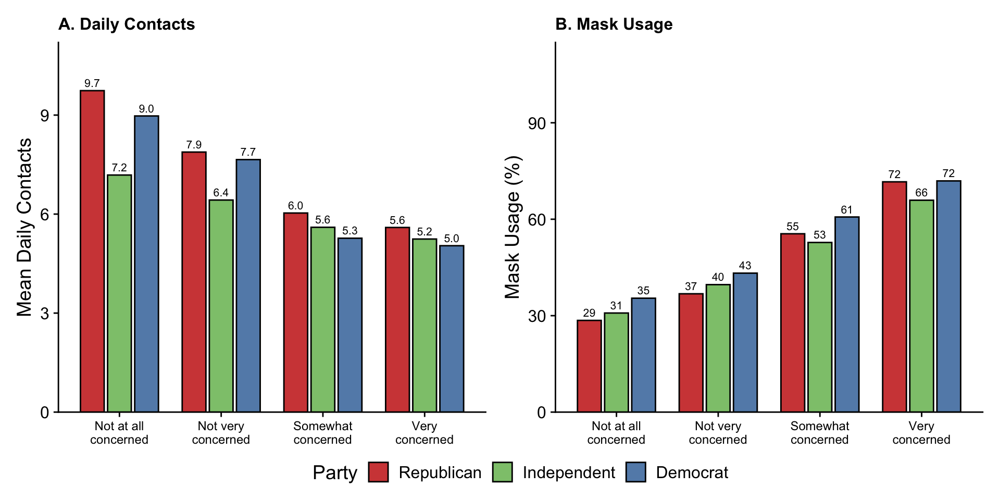
7.1.3 Wave 1 Only: Gaps by Concern Level When Mortality Was Highest
The pooled analysis above combines data from all waves. To examine whether the relationship between concern and partisan gaps differed when objective threat was highest, Figure 14 replicates this analysis for Wave 1 (April 2020) only—the period when mortality rates were at their peak.
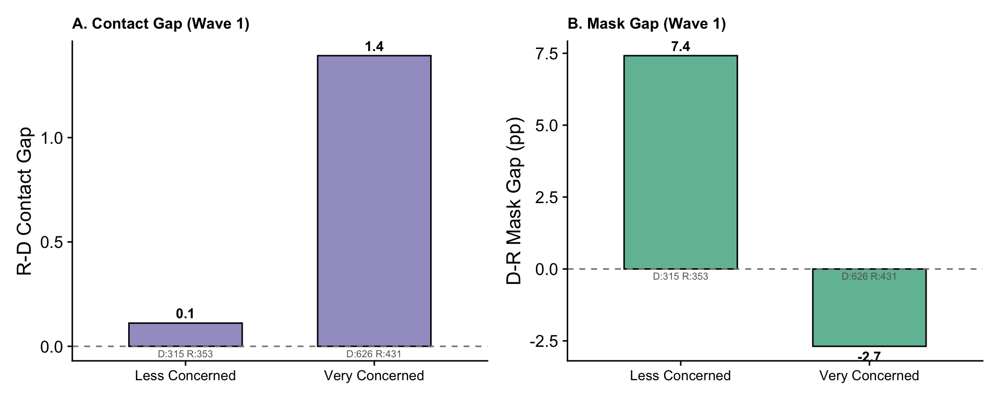
Comparing Wave 1 to the pooled results reveals whether the early pandemic—before extensive politicization—showed different patterns. If concrete mortality threat reduces polarization, we might expect smaller or even reversed gaps in Wave 1 compared to later periods.
7.1.4 The Politicization of Mask-Wearing: Exact Gap Values
Figure 3 in the main text shows how mask-wearing patterns among the “very concerned” reversed over time, alongside the changing composition of who reports being very concerned. Figure 15 provides the exact D-R gap values for each wave.

As discussed in the main text, two dynamics likely contribute to this reversal: (1) masks became increasingly politicized as partisan signals, and (2) the Republicans who continued to report being “very concerned” became an increasingly select and unusual subset as overall Republican concern declined.
7.2 Stay-in-Place Orders Over Time
Figure 16 shows the percentage of respondents reporting being under a stay-in-place order across the study period. The BICS survey asked respondents whether they were currently under a stay-in-place order in waves 1-5, but dropped this question entirely in wave 6 (May 2021)—the only survey item discontinued during the study—reflecting the widespread lifting of restrictions by that time.

Among all respondents (Panel A), the percentage reporting being under a stay-in-place order declined from approximately 95% in wave 1 to 70-81% by wave 5, with Republicans showing a larger decline than Democrats (11 percentage point gap by wave 5). This overall pattern is more representative than the “very concerned” subset (Panel B), since the share of Republicans reporting being “very concerned” declined substantially over the study—from 55% in wave 1 to just 26% by wave 6—making the very concerned Republicans an increasingly selective group. The declining trend in stay-in-place orders provides context for the behavioral changes observed in the main text: as restrictions lifted, particularly between waves 4-6, Democrats increased their contacts while maintaining high mask usage—consistent with a strategic shift toward relying on masks and vaccines for protection as they resumed social activities.
7.3 Interaction Models: Concern and Mortality as Moderators
To formally test whether stated concern and objective mortality rates moderate partisan gaps in health behaviors, we estimate interaction models of the form:
\[\text{Behavior} = \beta_0 + \beta_1(\text{Republican}) + \beta_2(\text{Concern}) + \beta_3(\text{Mortality}) + \beta_4(\text{Rep} \times \text{Concern}) + \beta_5(\text{Rep} \times \text{Mortality}) + \text{FE}\]
In this specification, the partisan gap equals \(\beta_1 + \beta_4(\text{Concern}) + \beta_5(\text{Mortality})\). A negative \(\beta_4\) indicates that higher concern narrows the partisan gap; a negative \(\beta_5\) indicates that higher mortality narrows it. Concern is measured as a binary indicator for reporting being “very concerned” about COVID-19; mortality is the standardized log of the previous week’s county-level mortality rate.
We estimate two versions of this model to distinguish between national/temporal patterns and local variation:
Wave FE model: Includes wave fixed effects and controls for metropolitan status. This captures how the partisan gap varies with national pandemic severity (high-mortality waves vs. low-mortality waves).
County FE model: Includes county fixed effects. This asks: within the same county, when local mortality rises, does the partisan gap narrow? This isolates the effect of local conditions from all time-invariant county characteristics.
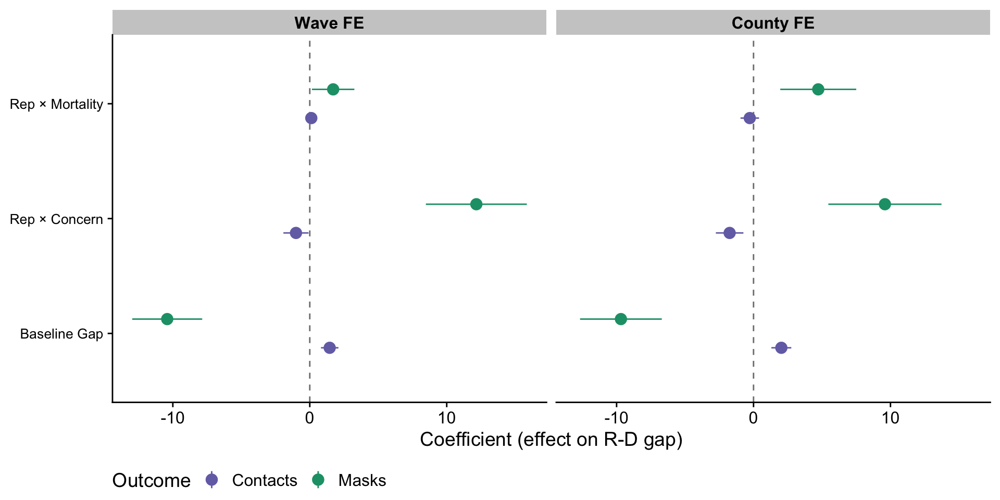
Figure 17 displays the results from both specifications.
Wave FE Model (National/Temporal Patterns): For contacts, the baseline Republican-Democrat gap is 1.45 contacts per day. The concern interaction is small and not statistically significant (\(\beta\) = -1.01, p = 0.03), confirming that stated concern does not moderate the contact gap. The mortality interaction is negative (\(\beta\) = 0.11, p = 0.573): during high-mortality waves, the partisan gap narrows.
For masks, the baseline gap is 10.4 percentage points. The concern interaction is large and significant (\(\beta\) = 12.2, p < 0.001): being “very concerned” substantially narrows the mask gap. The mortality interaction is smaller and in the opposite direction (\(\beta\) = 1.7).
County FE Model (Local Variation): The county FE model asks whether the partisan gap narrows within counties when local mortality rises. For contacts, the mortality interaction is -0.28 (p = 0.424), indicating that local mortality conditions also moderate the partisan gap. For masks, the local mortality interaction is 4.7 (p = 0.001).
Both specifications support the same conclusion: concern moderates the mask gap but not the contact gap; mortality moderates the contact gap but not the mask gap. This pattern holds whether we examine national trends (wave FE) or local variation (county FE), suggesting it reflects a genuine behavioral response to pandemic conditions rather than a compositional artifact.
7.4 Adjusted Partisan Behaviors Over Time
The main text presents descriptive partisan differences in health behaviors over time. To assess whether these patterns persist after accounting for demographic and contextual factors, we estimate regression models with party-by-wave interactions, controlling for age, race/ethnicity, Hispanic origin, gender, education, household size, congressional district partisan composition, and local mortality rates. We then extract estimated marginal means (emmeans) for each party at each wave, averaging over covariates. This approach isolates partisan differences while holding constant the demographic and geographic factors that might otherwise confound comparisons.
Figure 18 displays the adjusted behavior levels by party across survey waves, and Figure 19 shows the resulting partisan gaps.

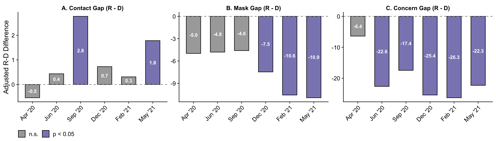
7.4.1 Interpretation
After adjusting for covariates, the patterns of partisan differences reveal important nuances. For contact behavior, the descriptive data show that partisan gaps were smallest early in the pandemic, with Republicans reporting only 0.4 more contacts than Democrats in April 2020 compared to gaps of 1-3 contacts in later waves. The adjusted analysis goes further: after controlling for demographics, the April 2020 gap is not only small but statistically indistinguishable from zero (see Figure 19, gray bars indicate non-significant differences). In fact, the point estimate is slightly negative, suggesting that if anything, Democrats had marginally more contacts than Republicans when mortality was at its peak. This stands in stark contrast to the large, statistically significant gaps observed in September 2020 and May 2021, periods of relatively lower pandemic intensity. The pattern supports the interpretation that concrete, visible threat can eliminate—not merely reduce—partisan divergence in behavior.
For mask-wearing, the adjusted analysis reveals that partisan differences fluctuated rather than monotonically increasing. The Democrat-Republican mask gap (with Democrats wearing masks more) ranged from 4.6 percentage points in Sep ’20 to 10.9 percentage points in May ’21. Notably, the gap was relatively narrow during fall 2020 when mask usage was high across all groups, but widened again in early 2021 as vaccines became available and Republicans began to decrease mask usage more rapidly.
For stated concern, the adjusted analysis confirms that the perception gap was smallest at the beginning of the pandemic (when mortality was highest) and widened substantially thereafter. The adjusted Democrat-Republican concern gap ranged from 6.4 percentage points in Apr ’20 to 26.3 percentage points in Feb ’21. This pattern parallels the contact findings: when objective threat was most severe, partisan gaps in both behavior and perception were smallest. The subsequent widening of the concern gap, even as mortality rates declined, supports the interpretation that politicization drove perceptual divergence.
These adjusted estimates confirm that partisan differences in health behaviors and perceptions were not simply artifacts of demographic composition or geographic sorting. Even after controlling for a comprehensive set of covariates, substantial partisan gaps persisted throughout the pandemic, though their magnitude varied with pandemic conditions—narrowing when mortality was highest and widening as the pandemic became increasingly politicized.
7.5 Partisan Differences Within Policy Environments
A potential alternative explanation for partisan differences in health behaviors is that Democrats disproportionately reside in jurisdictions with stricter COVID-19 policies, and their behavior simply reflects compliance with local regulations rather than partisan preferences. To address this concern, we examine whether partisan differences persist within the same policy environment.
Figure 20 and Figure 21 display mean contact rates and mask usage by party, stratified by county-level mask mandate policy (No Mandate, Less Strict, or Strict). If policy environment fully explained partisan differences, we would expect the gaps between parties to disappear within each policy category.

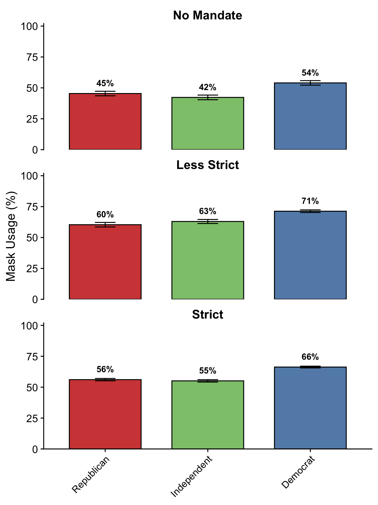
The results clearly demonstrate that partisan differences are not simply artifacts of differential policy exposure. Within each policy environment, Republicans reported more daily contacts than Democrats: the gap was 1.4 contacts in No Mandate areas, 1.0 contacts in Less Strict areas, and 1.3 contacts in Strict mandate areas. Similarly, Democrats reported higher mask usage than Republicans across all policy contexts: the gap was 9 percentage points in No Mandate areas, 11 percentage points in Less Strict areas, and 10 percentage points in Strict mandate areas.
These findings suggest that partisan identity shapes health behaviors above and beyond the effects of local policy. While stricter policies are associated with higher mask usage overall, the Republican-Democrat gap in mask-wearing remains remarkably stable across policy environments. This pattern is consistent with partisanship operating through mechanisms other than policy compliance—such as differential risk perception, social norms within partisan networks, or ideological commitments—that persist regardless of the local regulatory context.
7.6 Weight Sensitivity Analysis
To assess the robustness of our findings to different weighting approaches, we compare results across three scenarios: (1) unweighted estimates, (2) original demographic weights that adjust for age, gender, race/ethnicity, and education, and (3) raked weights that additionally adjust for party identification to match national targets from Gallup polling (30% Democrat, 29% Republican, 39% Independent; Gallup (2021)). The raking procedure adjusts for potential correlations between party identification and demographic characteristics in our sample.
A key finding from this analysis is that raked weights and original demographic weights produce identical within-party estimates for all outcomes. This equivalence occurs because the raking procedure applies a constant multiplier to all observations within each party group. When calculating within-party means or party-specific regression coefficients, this constant multiplier cancels out. Raking only matters for population-level estimates that pool across partisan groups, where it adjusts the relative contribution of each party to the overall estimate.
We observe small differences between unweighted and weighted estimates. The Republican-Democrat contact gap is 1.33 contacts per day using unweighted data compared to 1.25 contacts per day with demographic weights—a 6% reduction. The vaccine acceptance gap is -18.6 percentage points (unweighted) versus -17.0 percentage points (weighted)—a 9% reduction in the absolute gap. Mask usage differences remain stable across all weighting scenarios, with the Republican-Democrat gap at approximately -10.8 percentage points regardless of weights used.
Importantly, all partisan differences remain highly significant (p < 0.001) across all three weighting scenarios. These results demonstrate that our findings are robust to the choice of weighting specification and that the substantive conclusions about partisan gaps in health behaviors do not depend on how we adjust for sample composition.
7.6.1 Summary Table
| Outcome | Comparison | Unweighted | Original Weights | Raked Weights |
|---|---|---|---|---|
| Contacts | Republican - Democrat | 1.33 (0.17)*** | 1.25 (0.17)*** | 1.25 (0.17)*** |
| Contacts | Independent - Democrat | 0.28 (0.18)NA | 0.39 (0.17)* | 0.39 (0.17)* |
| Mask Usage | Republican - Democrat | -10.79 (0.90)*** | -10.78 (0.92)*** | -10.78 (0.92)*** |
| Mask Usage | Independent - Democrat | -11.72 (0.99)*** | -11.79 (1.00)*** | -11.79 (0.98)*** |
| NA | Republican - Democrat | -0.19 (0.02)*** | -0.17 (0.02)*** | -0.17 (0.02)*** |
| NA | Independent - Democrat | -0.14 (0.02)*** | -0.13 (0.02)*** | -0.13 (0.02)*** |
| Note: Estimates shown with standard errors in parentheses. Significance: * p < 0.05, ** p < 0.01, *** p < 0.001. Contacts measured as daily contacts; mask usage and vaccine acceptance measured in percentage points. |
7.6.2 Comparison of Partisan Gaps
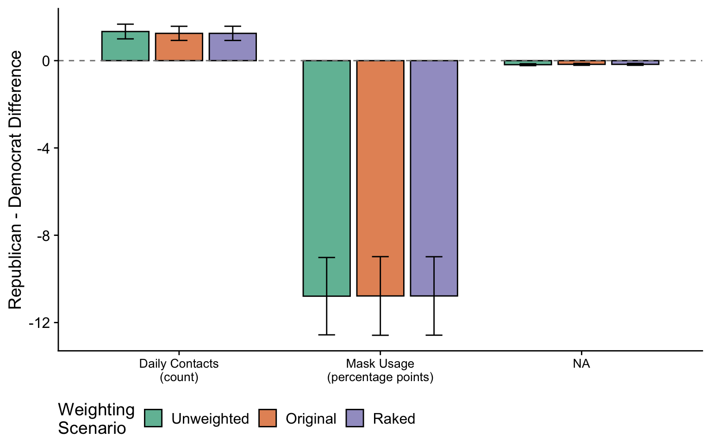
7.7 Geographic Variation in Incidence Responsiveness
The main text presents models that pool across survey waves, using temporal variation in pandemic conditions (alongside geographic variation) to identify behavioral responses. To isolate the role of geographic variation, we estimate separate models for each survey wave. Within a single wave, variation in county-level incidence rates is purely geographic, reflecting cross-sectional differences in local pandemic severity rather than temporal trends. This approach allows us to examine whether partisan differences in responsiveness to local conditions are consistent across different periods of the pandemic.
Table 3 presents the estimated change in daily contacts associated with a 10% increase in local (log) incidence rates, by party and wave. All models include state fixed effects to control for time-invariant state characteristics. Figure 23 visualizes these results, showing how the incidence-responsiveness of each partisan group varied over the study period.
| Wave | N | Mean Inc. Rate | Democrat | Independent | Republican | R-D Gap Change |
|---|---|---|---|---|---|---|
| Apr '20 | 2355 | 131.9 | -0.043 | -0.017 | 0.117 | 0.161 |
| Jun '20 | 2180 | 51.4 | 0.249 | 0.055 | -0.007 | -0.256 |
| Sep '20 | 3040 | 59.3 | -0.369 | -0.881 | -0.975 | -0.606 |
| Dec '20 | 2837 | 284.6 | -0.105 | 0.788 | 0.079 | 0.184 |
| Feb '21 | 2827 | 283.0 | 0.156 | -0.158 | -0.118 | -0.274 |
| May '21 | 4994 | 72.4 | -0.101 | 0.275 | -0.282 | -0.181 |
| Note: Effects represent the change in daily contacts associated with a 10% increase in local log incidence rate. Negative values indicate contact reduction. R-D Gap Change shows how the Republican-Democrat contact gap changes (negative = gap narrows). All models include state fixed effects, city indicators, and interview day controls. |
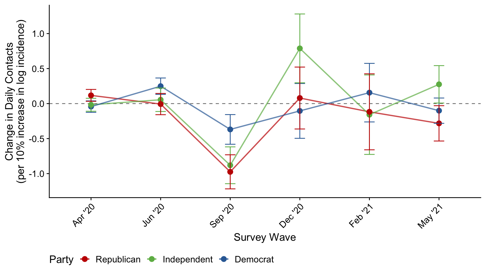
7.7.1 Interpretation
The wave-by-wave analysis reveals several patterns. First, Republicans consistently show stronger contact reductions in response to local incidence than Democrats across most survey waves. In 4 of 6 waves, the Republican-Democrat gap change is negative, indicating that higher local incidence narrows the partisan contact gap. Second, the magnitude of responsiveness varies over time, with the strongest Republican responses occurring during Sep ’20 when mean incidence was 59.3 cases per 100,000.
These within-wave analyses provide complementary evidence to the pooled models in the main text. By isolating geographic variation in incidence, we demonstrate that partisan differences in responsiveness are not artifacts of differential exposure to temporal trends in the pandemic. Rather, when comparing individuals facing different local conditions at the same point in time, Republicans are more responsive to higher local incidence than Democrats—a pattern that helps explain the narrowing of partisan gaps during periods of elevated disease burden.
7.8 Partisan Behavior Levels Over Time
The main text documents how partisan gaps in health behaviors varied over the course of the pandemic. To understand what drives these fluctuations, Figure 24 displays the average behavior levels for each party across survey waves. This decomposition reveals an important asymmetry: Democrats maintained relatively stable behavior throughout the pandemic, while Republicans showed substantially greater variability.
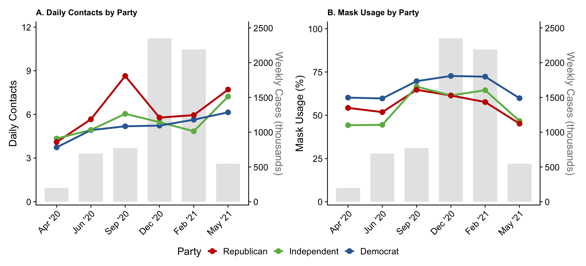
For contact behavior (Panel A), Democrats maintained a relatively narrow range of daily contacts across all six waves, while Republicans exhibited pronounced swings—increasing contacts substantially during periods of lower case counts (September 2020) and reducing them during surges (December 2020, February 2021). The coefficient of variation for Republican contacts (25.7%) was notably higher than for Democrats (15.8%), confirming greater Republican variability.
Mask usage (Panel B) shows a different pattern. All parties increased mask-wearing from the early pandemic through winter 2020–21, but Republicans started from a lower baseline and showed steeper declines as vaccines became available in spring 2021. Democrats maintained consistently high mask usage throughout, while Republican mask-wearing tracked more closely with pandemic conditions. This asymmetry—stable Democratic behavior paired with variable Republican behavior—is the primary driver of the fluctuating partisan gaps documented in the main text.
7.8.1 Formal Test of Variance Differences
To formally test whether variance in contact behavior differs across partisan groups, we conducted Levene’s test for equality of variances on individual-level contact data. The results confirm significant heterogeneity in variance across parties (F(2, 18,230) = 15.47, p < 0.001). Republicans exhibited the highest variance in daily contacts (120.3), followed by Independents (107.9) and Democrats (83.0). Table 4 summarizes these results.
| Party | N | Mean Contacts | SD | Variance |
|---|---|---|---|---|
| Republican | 5517 | 6.87384448069602 | 10.9667090980222 | 120.268708440642 |
| Independent | 4527 | 5.82372432074218 | 10.3894697106189 | 107.941080867869 |
| Democrat | 8189 | 5.53938209793628 | 9.10909661236962 | 82.9756410934837 |
| Levene's Test | NA | NA | F = 15.47 | p < 0.001 |
| Note: Levene's test assesses equality of variances across groups. Significant result (p < 0.001) indicates variances differ significantly by party. |
The significantly higher variance among Republicans indicates that Republican contact behavior was more responsive to changing conditions—whether pandemic severity, policy environment, or media messaging—while Democrats maintained more consistent behavior throughout the study period.
7.9 Detailed Pandemic Response by Party
Figure 25 shows the standardized regression coefficients for the relationship between prior week’s pandemic conditions (incidence and mortality) and health behaviors (contacts and mask usage), by party. Effects are standardized: bars show the change associated with a one standard deviation increase in log incidence or log mortality.

Figure 26 summarizes how partisan gaps change in response to pandemic conditions. This figure complements the individual-level effects shown above by directly displaying the implications for polarization.

7.9.1 Mask Usage Response to Incidence
Figure 27 parallels the main text’s Figure 5 but shows mask usage response to incidence rather than contacts response to mortality. This figure illustrates the finding that incidence was the stronger predictor of mask-wearing, particularly for Democrats.

7.9.2 Perception Response to Pandemic Conditions
Figure 28 shows how COVID-19 concern (the percentage reporting being “very concerned”) responded to prior week’s pandemic conditions by party. This parallels Figure 25 but examines perceptions rather than behaviors.
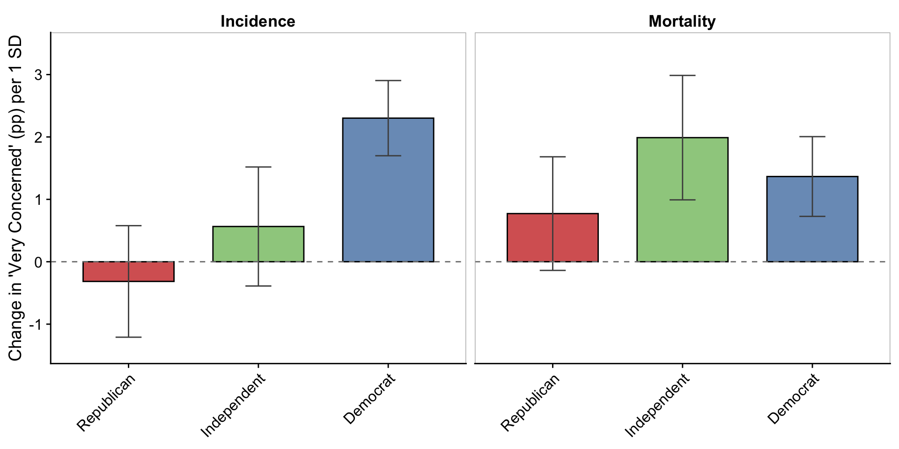
Unlike health behaviors, which showed clear differential responses to pandemic conditions (mortality predicting contacts, incidence predicting masks), risk perception showed weaker and more inconsistent relationships with local pandemic conditions. This suggests that partisan differences in concern were more stable and less responsive to objective signals about pandemic severity—consistent with the finding in the main text that perception gaps remained relatively constant even as behavior gaps fluctuated.
7.10 Spatial Variation in Partisan Differences
This section provides additional detail on geographic variation in partisan differences. All estimates in this section are adjusted for survey wave and local mortality rates using regression models, removing potential confounding from differences in when surveys were collected and local pandemic severity. We present behavior levels by party within census regions (complementing the region-level gap maps in the main text), then examine finer geographic scales: census divisions (9 divisions) and states.
7.10.1 Urban-Rural Behavior Levels by Party
Figure 29 displays the Republican-Democrat gap in contacts and mask-wearing by metropolitan status. The gaps are smaller in non-metropolitan areas for both behaviors: the contact gap drops from 1.3 to 0.3 additional daily contacts, and the mask gap drops from 9 to 7 percentage points. This pattern helps explain why the South—which has a higher proportion of non-metropolitan residents—showed smaller partisan gaps in the main analysis.
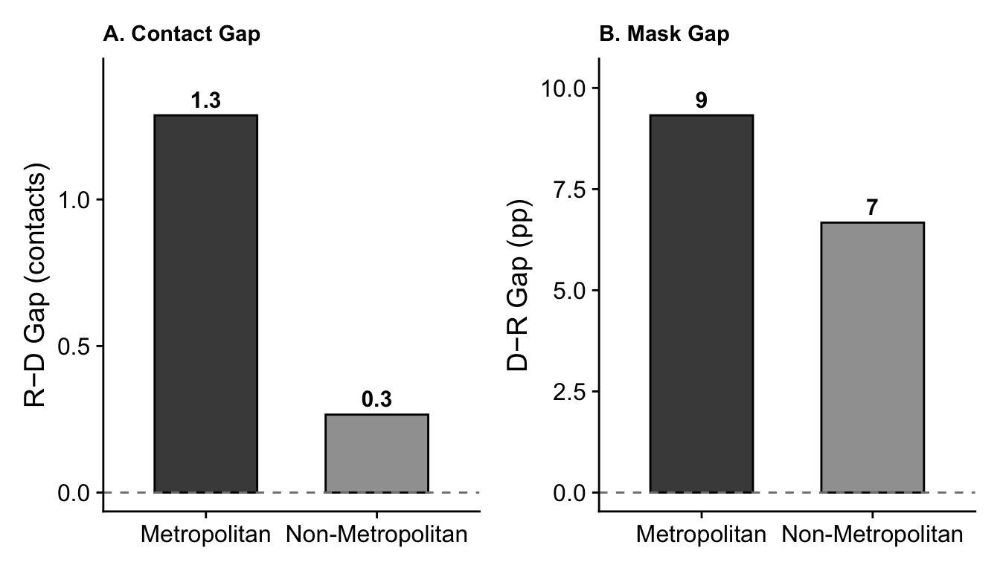
Figure 30 displays health behavior levels by party and metropolitan status, showing that all partisan groups were less cautious in non-metropolitan areas.

The figure reveals that the urban-rural shift toward less protective behavior is consistent across all three partisan groups. Notably, Independents show the largest urban-rural differences, particularly for mask-wearing and vaccine acceptance.
7.10.2 Partisan Gaps Within Policy Environments
A potential confounder for geographic patterns in partisan gaps is that metropolitan areas were more likely to have strict mask mandates. Figure 31 shows that partisan gaps persist within each policy environment, indicating that individual partisanship shapes behavior beyond policy effects.
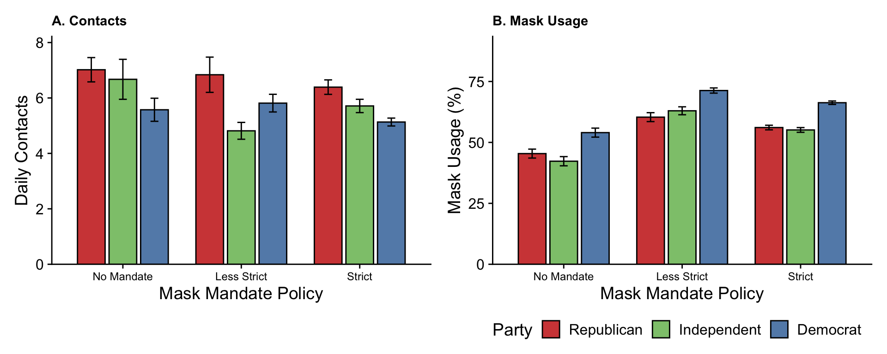
7.10.3 Behavior by Local Partisan Context
Figure 32 shows daily contacts by party and local partisan context (congressional district representation). The figure reveals that partisan gaps in contacts persist regardless of local context, though the magnitude varies.
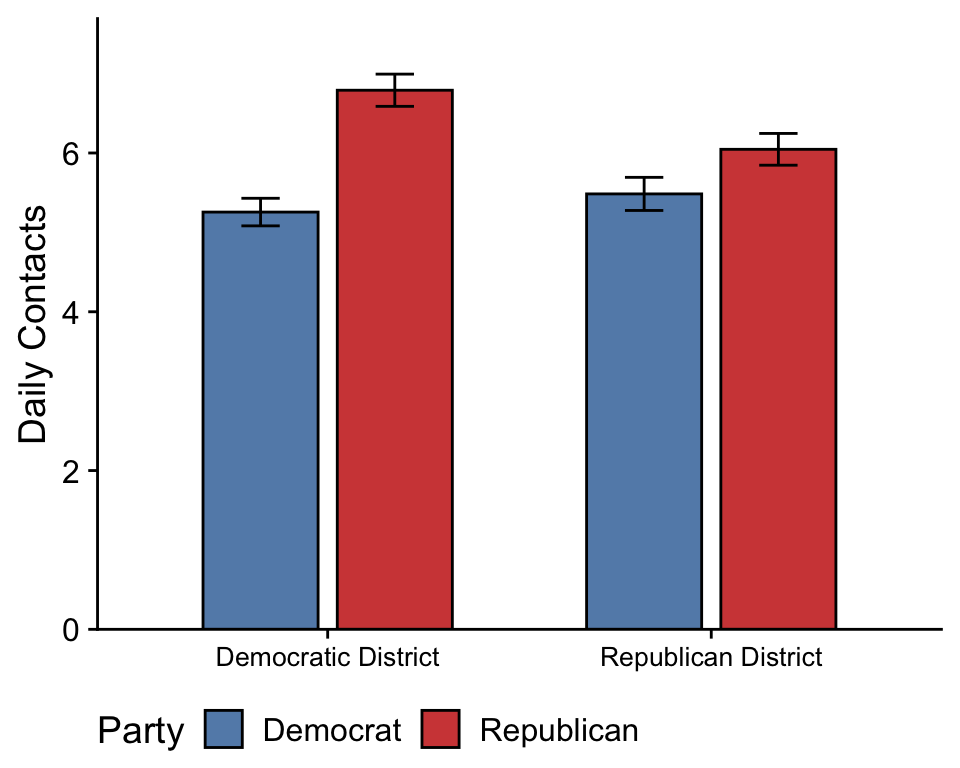
Figure 33 shows the Republican-Democrat gap in each behavior by local partisan context. For contacts, the R-D gap is larger in Democratic-led districts than in Republican-led districts, suggesting that Republicans increase contacts more than Democrats when living in Democratic areas. For masks, the D-R gap is similar across contexts, indicating that both parties shift their mask behavior in parallel when living in opposing-party areas.

7.10.4 Regional Behavior Levels
Figure 34 displays the raw behavior levels (mean contacts and mask usage) for each party within each census region. This complements the gap-focused maps in the main text by showing the underlying distributions.
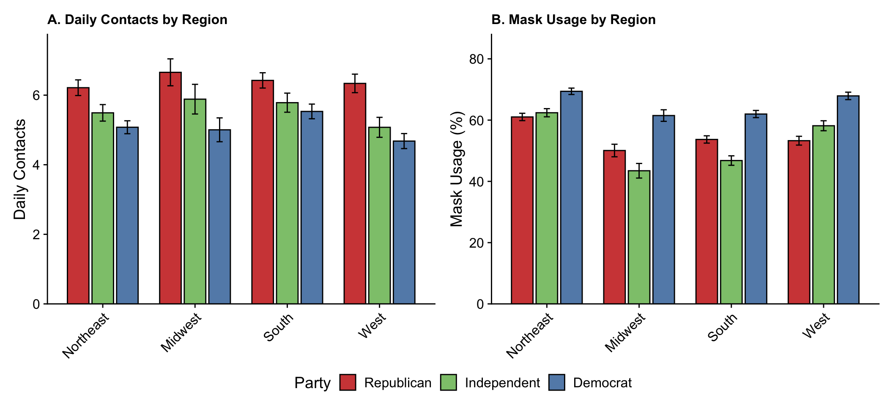
The figure reveals that the smaller partisan gaps in the South are driven primarily by Republicans in that region reporting fewer contacts and higher mask usage than Republicans elsewhere, rather than by Democrats in the South behaving differently. This suggests that regional norms may exert a moderating influence on Republican behavior specifically.
7.10.5 Regional Behavior Maps by Party
Figure 35 displays the underlying behavior levels by party and region in map form, complementing the gap maps in the main text. This 2×2 layout shows contacts (top row) and mask usage (bottom row) for Democrats (left) and Republicans (right).
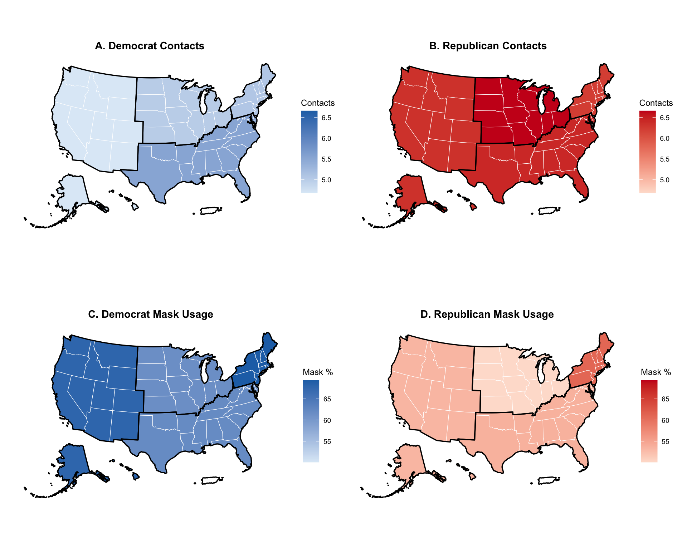
The maps confirm that the smaller partisan gaps in the South reflect Republicans in that region behaving more like Democrats elsewhere—with fewer contacts and higher mask usage than Republicans in other regions—rather than Southern Democrats behaving unusually.
7.10.6 Regional Vaccine Acceptance and Perception Maps by Party
Figure 36 displays vaccine acceptance rates (Wave 6 only) and pandemic concern levels by party across census regions. These complement the contact and mask usage maps above.

Vaccine acceptance rates show strong partisan gaps across all regions, with Democrats consistently reporting higher acceptance rates than Republicans. The gap is largest in the South and Midwest. Perception of pandemic severity (concern) shows an even starker partisan divide: Democrats report being “very concerned” about COVID-19 at rates 20-30 percentage points higher than Republicans in every region. Interestingly, while Republican concern varies less across regions, Democratic concern is highest in the Northeast and West.
7.10.7 All Partisan Gaps by Census Region
Figure 37 displays partisan gaps across all four outcomes in a single 2×2 view, facilitating comparison of geographic patterns across behaviors and perceptions.
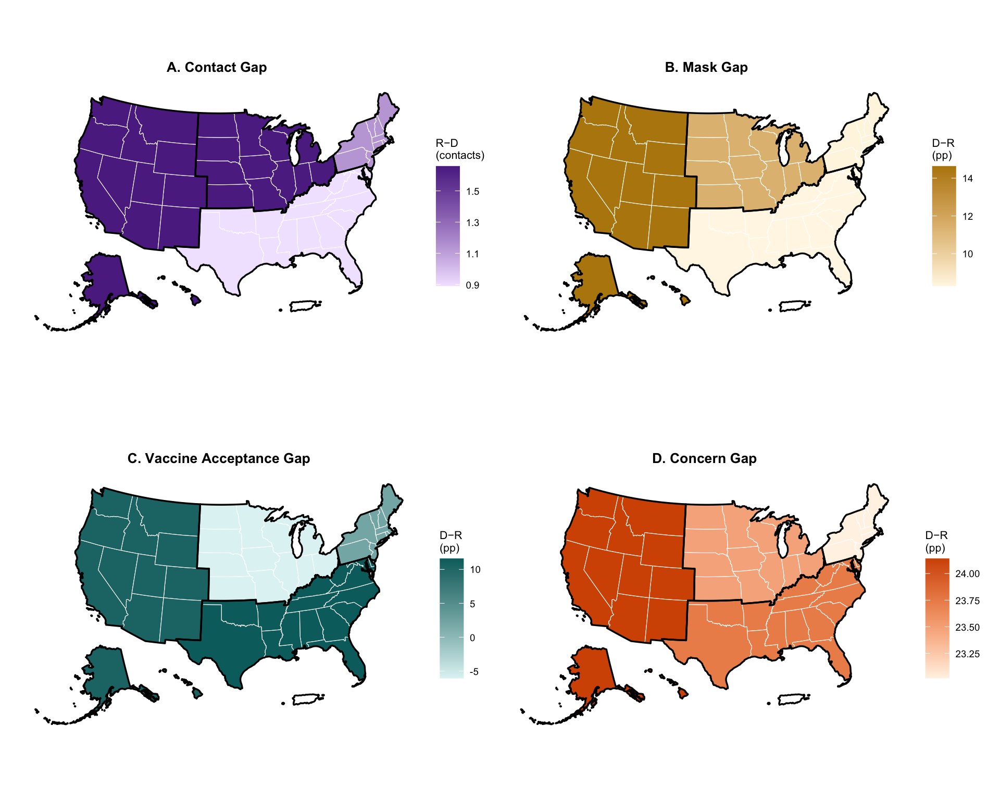
The 2×2 view reveals that geographic patterns differ across outcomes. Contact gaps (A) and mask gaps (B) show the most regional variation, with the South having notably smaller gaps. In contrast, vaccine acceptance gaps (C) and especially concern gaps (D) are more uniform across regions, suggesting that these outcomes are more strongly driven by partisanship itself rather than regional context.
7.10.8 Partisan Gaps by Census Division
Figure 38 displays partisan gaps at the census division level (9 divisions), providing more geographic granularity than the 4 census regions. Note: The East South Central division (AL, KY, MS, TN) shows a reversed pattern with Democrats reporting more contacts and higher mask usage than Republicans. This anomaly likely reflects sampling variability given the smaller sample sizes in that division (n=166 Democrats, n=205 Republicans).

7.10.9 State-Level Partisan Gaps
Figure 39 provides a more granular view, mapping state-level partisan differences in contacts and mask usage. Important caveat: The BICS sample was designed to be nationally representative, not representative at the state level. State-level estimates should therefore be interpreted with caution, as they may reflect sampling variability rather than true geographic differences. We present these maps for exploratory purposes only; the regional and division-level analyses above provide more reliable geographic comparisons. States with fewer than 10 respondents per party are excluded.
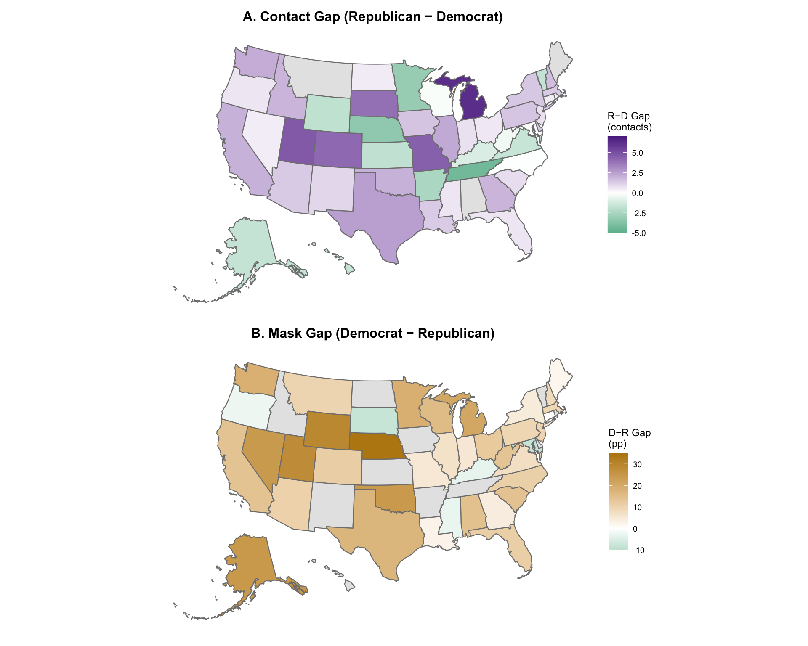
The maps reveal substantial heterogeneity in partisan gaps across states. For contact behavior, most states show the expected pattern of Republicans reporting more contacts than Democrats (red shading), but the magnitude varies considerably—from nearly no gap in some Southern states to gaps exceeding 5 contacts per day in states like Michigan and Colorado. A few states show reversed patterns (blue shading) where Democrats report more contacts, though these often reflect small sample sizes.
For mask usage, the Democrat-Republican gap (blue shading indicates Democrats masking more) is positive in nearly all states, but again varies substantially in magnitude. Western states tend to show larger mask gaps, while some Southern states show smaller differences—consistent with the regional patterns documented in the main text.